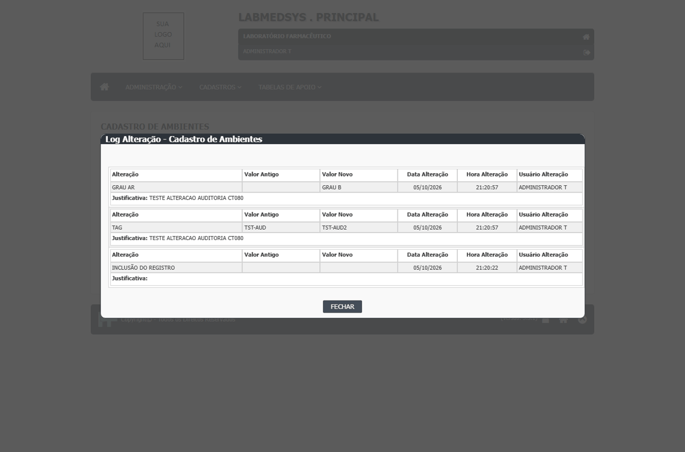
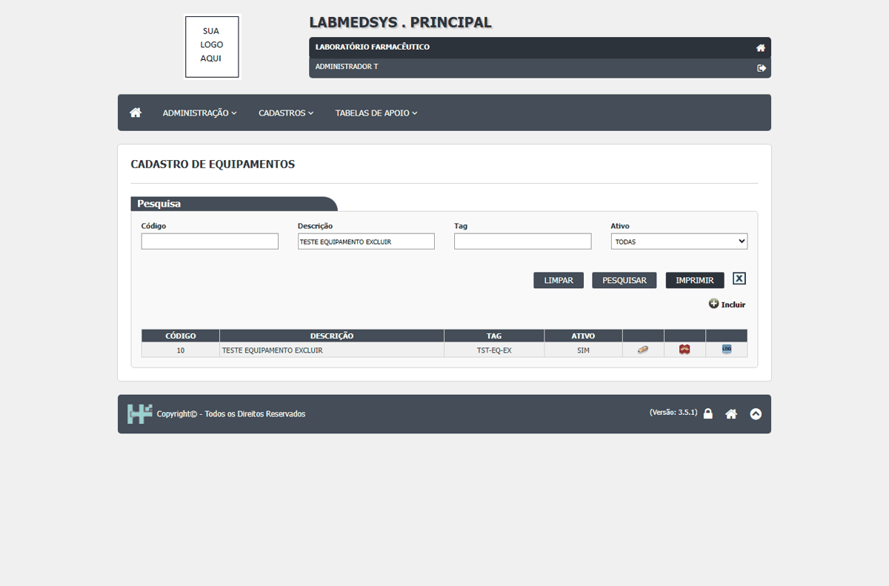
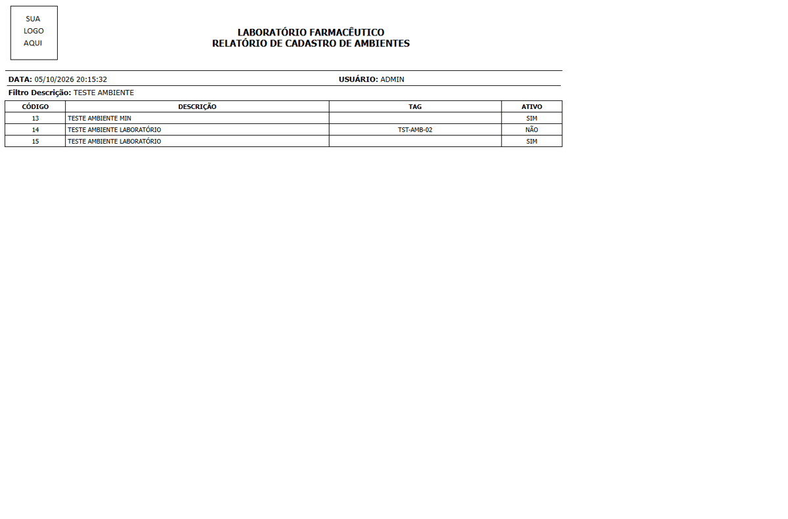
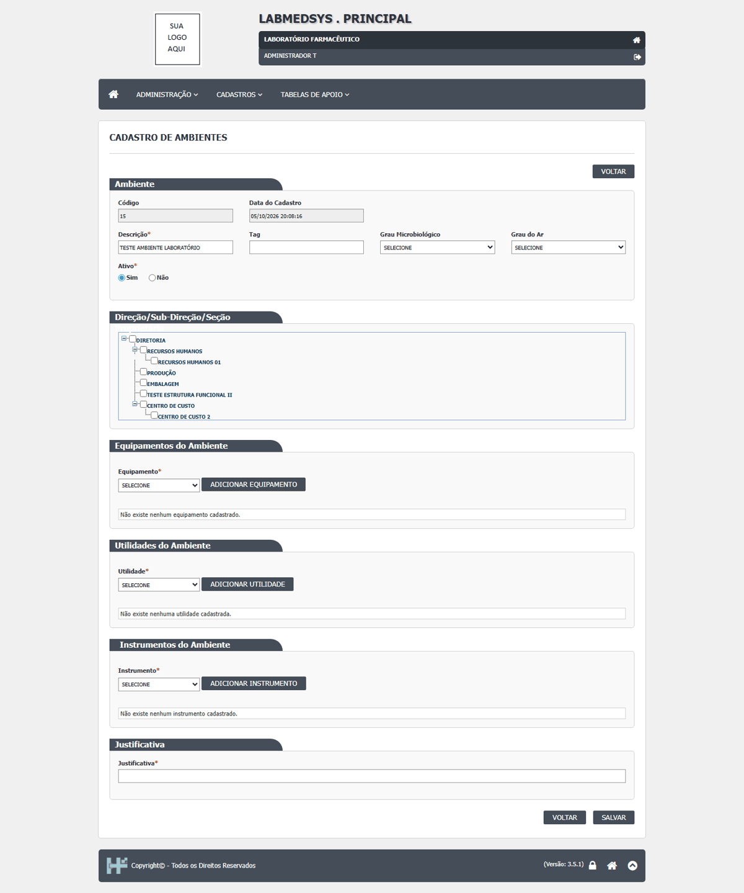

DV-PRI-009 · Exclusão de Ambiente e de Equipamento é gravada sem pedir justificativa
Ao excluir um ambiente ou um equipamento, o sistema pede só a confirmação **"Confirma a exclusão do item?"** e mostra **"Exclusão realizada com sucesso!"**. Não há campo de justificativa. O registro vai para a lixeira, mas o motivo da exclusão não fica registrado. Nas outras telas do mesmo módulo a justificativa é exigida: na alteração de Ambiente e Equipamento e na exclusão de Profissional. A área decidiu que toda exclusão e alteração de cadastro deve exigir justificativa (RN-PRI-070).
Como reproduzir o erro, passo a passo
- Entrar no módulo Principal e abrir Cadastros › Cadastro de Ambientes.
- Em Descrição, digitar TESTE AMBIENTE EXCLUIR e clicar em PESQUISAR.
- Clicar no ícone vermelho de excluir da linha.
- Na janela "Confirma a exclusão do item?", clicar em SIM.
- Repetir em Cadastros › Cadastro de Equipamentos com um equipamento TESTE sem itens vinculados.
Esperado
Antes de excluir, pedir a justificativa (obrigatória, com a mensagem "A justificativa da exclusão é obrigatória!" se vazia), como já faz a exclusão de Profissional, e gravá-la no histórico junto com usuário, data e hora.
Obtido
Só "Confirma a exclusão do item?" e "Exclusão realizada com sucesso!". Nenhum campo de justificativa; o histórico do registro não guarda motivo.
Evidência (captura da tela)


DV-PRI-014 · O histórico de um registro excluído não pode mais ser consultado pelas telas
O histórico ("Log Alteração") só abre pelo ícone **LOG** da linha do registro na lista. Depois da exclusão, o registro some da lista (com o filtro **Ativo** em TODAS, SIM ou NÃO) e o ícone some junto. Não há tela para consultar registros excluídos nem o histórico deles. Quem audita não consegue ver pelas telas quem criou, alterou e excluiu o registro, nem quando.
Como reproduzir o erro, passo a passo
- Entrar no módulo Principal e abrir Cadastros › Cadastro de Ambientes; incluir TESTE AMBIENTE AUDITORIA.
- Editar o ambiente, alterar Tag e Grau do Ar, preencher a Justificativa e clicar em SALVAR.
- Na lista, clicar no ícone LOG da linha e conferir os itens do histórico.
- Excluir o ambiente (ícone vermelho) e confirmar.
- Pesquisar TESTE AMBIENTE AUDITORIA com Ativo em TODAS, SIM e NÃO e procurar uma forma de abrir o histórico dele.
Esperado
Conseguir consultar o histórico completo do registro excluído (inclusão, alterações e exclusão, com usuário, data, hora e justificativa), por exemplo por um filtro "Excluídos" na lista ou por uma tela de consulta da lixeira.
Obtido
"A pesquisa não retornou nenhum resultado." com qualquer filtro. Não há ícone nem tela para abrir o histórico do ambiente excluído.
Evidência (captura da tela)


DV-PRI-011 · Exclusão recusada com mensagem genérica, sem dizer qual cadastro ou item impede
Quando um registro não pode ser excluído porque outro depende dele, o sistema recusa (correto), mas sempre com a mesma frase: **"Exclusão inválida, existem referências com outras tabelas."** O usuário não sabe **o que** impede a exclusão. Exemplos: um ambiente usado num **Ponto de água**; um equipamento recém-criado que tinha o tipo **"Manutenção preventiva"** marcado na própria tela. No segundo caso, a equipe só descobriu o motivo removendo item por item (o defeito DV-PRI-012 foi aberto por engano por causa disso e depois encerrado).
Como reproduzir o erro, passo a passo
- Entrar no módulo Principal e abrir Cadastros › Cadastro de Ambientes; incluir o ambiente TESTE AMBIENTE DEPENDENTE.
- Abrir Cadastros › Cadastro de Pontos de Água, incluir o ponto TESTE PONTO AGUA DEP e escolher esse ambiente.
- Voltar ao Cadastro de Ambientes, pesquisar TESTE AMBIENTE DEPENDENTE e clicar no ícone de excluir da linha; confirmar.
- Para o equipamento: em Cadastros › Cadastro de Equipamentos, incluir um equipamento com uma Categoria (o tipo de manutenção da categoria vem marcado), salvar e tentar excluir pela lista.
Esperado
Recusar a exclusão dizendo qual dependência impede, por exemplo "Este ambiente está ligado ao ponto de água TESTE PONTO AGUA DEP" ou "Desmarque os tipos de manutenção do equipamento antes de excluir" (RF-PRI-041, RN-PRI-051 e RN-PRI-071).
Obtido
"Exclusão inválida, existem referências com outras tabelas." nos dois casos. O registro continua na lista.
Evidência (captura da tela)


DV-PRI-007 · Cadastro de Ambientes aceita duas descrições iguais
O sistema gravou dois ambientes com a mesma descrição, **TESTE AMBIENTE LABORATÓRIO** (códigos 14 e 15). A Tag é conferida contra repetição, mas a Descrição não. Nas listas de escolha dos outros cadastros (Ponto de água, por exemplo) os dois aparecem com o mesmo nome e o usuário não sabe qual escolher. A regra (pode ou não repetir) ainda precisa ser definida pela área.
Como reproduzir o erro, passo a passo
- Entrar no módulo Principal e abrir Cadastros › Cadastro de Ambientes; clicar em Incluir.
- Em Descrição, digitar TESTE AMBIENTE LABORATÓRIO, deixar Ativo Sim e clicar em SALVAR.
- Clicar em Incluir de novo, digitar a mesma Descrição e clicar em SALVAR.
- Pesquisar TESTE AMBIENTE e clicar em IMPRIMIR.
Esperado
Recusar a segunda inclusão com uma mensagem como "Descrição já cadastrada!" (a regra precisa ser confirmada pela área; ver observações).
Obtido
"Inclusão realizada com sucesso!" nas duas vezes; a lista e o relatório mostram dois ambientes com a mesma descrição.
Evidência (captura da tela)


DV-PRI-008 · Pesquisa por nome não ignora acentos nos cadastros de Ambiente, Equipamento e Pessoa jurídica
A pesquisa encontra por parte do nome e não se importa com maiúsculas e minúsculas, mas **não acha o registro quando o texto é digitado sem acento**: "laboratorio" não encontra "LABORATÓRIO", "pressao" não encontra "PRESSÃO" e "farmaceutica" não encontra "FARMACÊUTICA". Quem digita sem acento conclui que o registro não existe e pode cadastrá-lo de novo.
Como reproduzir o erro, passo a passo
- Entrar no módulo Principal e abrir Cadastros › Cadastro de Ambientes.
- Em Descrição, digitar laboratorio (sem acento), deixar Ativo em TODAS e clicar em PESQUISAR.
- Repetir com laboratório (com acento) para comparar.
- Fazer o mesmo em Cadastro de Equipamentos com pressao e em Pessoa Jurídica (campo Nome/Razão Social) com farmaceutica.
Esperado
Encontrar o registro com ou sem acento, como já acontece com maiúsculas e minúsculas (CT-PRI-096).
Obtido
"A pesquisa não retornou nenhum resultado." com o texto sem acento; com acento, encontra.
Evidência (captura da tela)